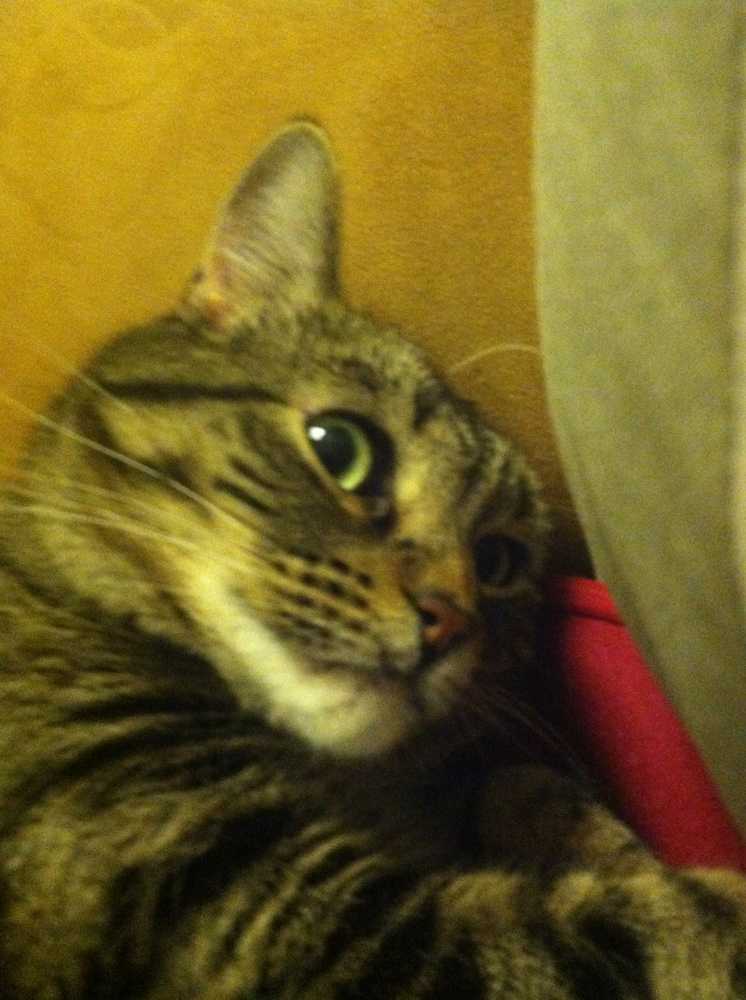

Cora Hays-Magan

Pairing and Feedback in Phase 0
Two things that do together well
August 23, 2015
I find it a bit odd to pair remotely in Phase 0. There's the whole bit of communication which occurs with body language left out and the unflattering angles of the laptop camera and poor lighting added in to equation. Also, there's always the threat of internet issues to muck up a session. Yikes!
Beyond the aspect of the remote factor during Phase 0 of Dev Bootcamp, I love to pair. There are tons of ideas and good chemistry/communication makes the challenges run fairly smoothly. What makes for good chemistry/communication? I bring it back to basics of pairing, communication. When I have a session in which the person checks in with me, and I check in with them on their status and well-being, it's going to be OK. A bonus comes if the person expresses strategies or role division for the driver and navigator. I have my own definitions/strategies for the roles:
- The navigator reads the instructions, discusses the code theory and details, and bears the burden of researching the docs more when the pair is stumped
- The driver sets up the files, discusses the code theory and details, and bears the burden of trying out more options when the pair is stumped
- Both the navigator and the driver need to watch the time/code for opportunities to switch places and say the name of the code line before talking about it ("In line 23, what is X doing?")
Feedback is a big part of Dev Bootcamp Phase 0. I took the time to rate a bit of feedback before ever submitting it, though it didn't make the submission too much easier. My first few felt either too harsh or too glossed over. Finally, I found a bit of a rhythm of writing about the challenge positively and then noting one specific thing to change or continue doing. Specific, actionable, and kind feedback informs the receiver of exactly what, how, and with being harsh or mean. In order to meet the kind requirement, I often find myself isolating the feedback to one specific action which was negative during the session and praising the other positive actions. It's easy to criticise and criticism isn't feedback, it's just un-useful judgment.
I feel vulnerable when pairing with a stranger remotely and then providing feedback on them. And then I get the feedback, which I cringe for a moment before scrolling over for each way, the feedback received and given. It's all been pretty good and maybe the cringing is a good thing.
From the feedback, a few bad habbit and a number of good were noted for me to decrease or increase. For that, I am thankful. It's hard to give useful feedback and once given, it should be accepted and thanked.
I like to thank with a cat.
